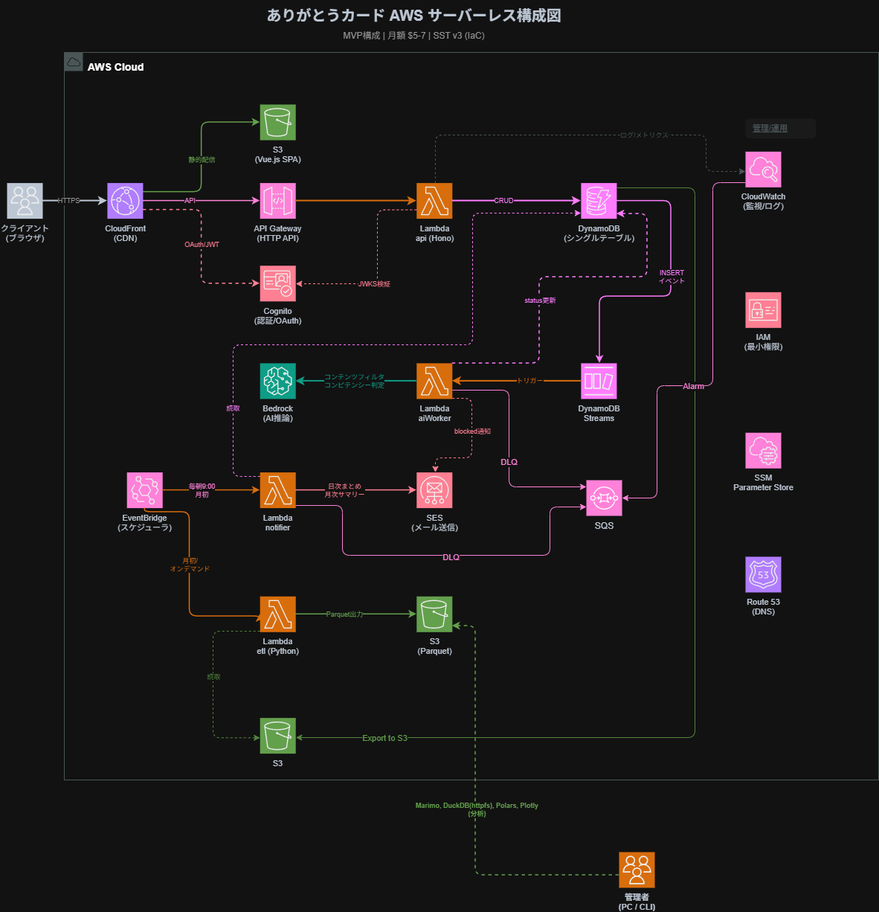

システム構成図
AWSサーバーレス構成の全体像。月額 $5-7 / SST v3 (IaC) で管理。

📐 draw.io で開いて編集する（aws-architecture.drawio）技術スタック
各レイヤーの選定技術と理由。詳細な比較・設計判断は 統合設計ノート を参照。
| カテゴリ | 選定技術 | 比較した候補 | 選定理由（WHY） |
|---|---|---|---|
| 🖥️ フロントエンド | Vue 3 + Vite（SPA） | React / Svelte | 社内標準・学習コスト低。S3 + CloudFront で静的配信しサーバー不要 |
| 🎨 UIライブラリ / CSS | shadcn-vue + Tailwind CSS | Vuetify / PrimeVue | ヘッドレスで自由度高。AIエージェント親和性が高く、デザインの一貫性を保ちやすい |
| ⚙️ バックエンド | Hono on Lambda | Express / Fastify | TSファースト・Web標準API。サーバーレスでの運用負荷最小。Hono RPC で型安全API |
| 🗄️ データベース | DynamoDB + ElectroDB | RDS (PostgreSQL) / Supabase | フルマネージド・月$1以下。サーバーレス親和。ElectroDB でシングルテーブル設計を型安全に管理 |
| 🤖 AI（LLM） | Amazon Bedrock | OpenAI API / Anthropic API | AWS統一管理・IAM認証。MVPではコンテンツフィルタ + コンピテンシー判定のみ実装 |
| 🔐 認証 | Cognito + Google OAuth | Auth0 / Firebase Auth | AWS統一・5万ユーザー無料。フロントSDKは oidc-client-ts（外販時のIdP切り替えに備える） |
| ☁️ ホスティング / IaC | AWS (S3 + CloudFront + Lambda) + SST v3 | Vercel / Netlify | AWS統一管理・TypeScriptでIaC。SSTステージで環境分離 |
| 🚀 CI/CD | GitHub Actions + SST | AWS CodePipeline | GitHub内完結。ジュニアのCI/CD実践学習になる |
非機能要件の優先順位
トレードオフが発生した際の判断基準。上位ほど優先する。プロジェクトの3大方針（学びの方向性・月50USD予算・外販への備え）から導出。
主要な設計判断
Sprint 0 で確定したアーキテクチャ判断の要約。全22件の ADR 詳細は アプリケーションアーキテクチャ設計ノート を参照。
| ID | 判断 | 選択 | 根拠 |
|---|---|---|---|
| ADR-01 | バックエンド構造 | Route → UseCase → Domain → Repository 4層 | RDS移行パスの確保。ドメインロジックの独立性 |
| ADR-02 | UseCase粒度 | 1操作 = 1クラス = 1ファイル | AIエージェントのスコープ特定・PRレビュー粒度 |
| ADR-05 | フロント構造 | Feature-based ディレクトリ | 機能追加時の影響範囲最小化。feature間の直接import禁止 |
| ADR-07 | 状態管理 | TanStack Query + composable（Pinia不使用） | 60名規模にPiniaは過剰。状態の所在がシンプル |
| ADR-08 | スキーマ方針 | Zod → z.infer で型生成（Single Source of Truth） | スキーマと型のズレが原理的に起きない |
| ADR-11 | 非同期ラベリング | TanStack Query ポーリング（5秒） | Lambda 29秒制限でSSE不可。ポーリングでSSE同等UX |
| ADR-16 | ドメイン層 | 軽量ドメインモデル（状態遷移・バリデーション） | 貧血ドメインモデルを構造的に防止 |
| ADR-17 | 依存性逆転 | domain/interfaces/ にRepository interface定義 | ドメインがインフラに依存しないことをディレクトリ構造で強制 |
未決定事項
Sprint 0 時点で結論が出ていない項目。プロト検証や追加議論が必要。
DynamoDB テーブル設計方式 — シングルテーブル設計 vs テーブル・パー・エンティティ方式。Sprint 0 でプロト検証を行い、チームの理解しやすさ・AI支援との相性を比較した上で決定する。
WAF 導入時期 — MVPでは不要と判断。外販フェーズでIP制限・レート制限を検討する。ただしCloudFrontにWAFをアタッチする構成は設計に含めてある。
ETL 方式の詳細 — DynamoDB Export to S3 方向で検討中。marimo + polars + plotly でアドホック分析スクリプトを作成予定だが、具体的な分析項目は未定。
「暫定」ステータスの技術 — 技術スタックの多くは「暫定」。Sprint 1 で実装を進めながら最終確定する。DB（DynamoDB）と認証（Cognito + oidc-client-ts）のみチーム合意で「確定」済み。
詳細ドキュメント
このサマリーの元となる詳細設計ノート。各領域の深い議論と判断根拠はこちら。
Sprint 0 統合設計ノート
技術選定の全比較表、DynamoDBテーブル設計、APIルート構成、ミドルウェアスタック、コスト試算、セキュリティ設計、外販拡張計画
アプリケーションアーキテクチャ設計ノート
モノレポ構造、apps/api レイヤー設計、apps/web Feature-based構造、packages/shared・db設計、非同期ラベリング設計、全22件のADR
AWS構成図（draw.io）
CloudFront → API Gateway → Lambda → DynamoDB → Streams → Bedrock の全体構成。draw.io で開いて閲覧・編集可能
ドキュメントポータル
プロジェクト全体のドキュメント一覧。プロジェクト概要、開発ガイド、Sprint資料など
議事メモ
Sprint 0 での議論の過程と判断の背景。
前提確認で合意したこと
- ユーザー規模：全社60名（4部門：営業部・開発部・DX企画部・管理部）
- 予算：月50USD以内（インフラ + AI API）
- 認証：Google OAuth（社内Google Workspace連携）
- AI：コンテンツフィルタ + コンピテンシー5種の自動判定。文面提案はMVP後
- 開発体制：12名、アジャイル/スクラム 1ヶ月スプリント、約6ヶ月でMVP
フロントエンドの議論
Vue 3 は社内標準で異論なし。状態管理で Pinia vs TanStack Query + composable を議論し、60名規模の社内ツールにPiniaは過剰としてTanStack Queryに決定。UIはshadcn-vue + Tailwind CSSで、ヘッドレスUIの自由度とAIエージェントとの相性を評価。
バックエンド・AI連携の議論
AIラベリングのタイミングが最大の議論点。同期処理（送信時にAI判定を待つ）vs 非同期処理（送信即完了、AI判定は後から）を検討し、Lambda 29秒制限とUXの両面から非同期を採用。DynamoDB Streams → Worker Lambda → Bedrock のパイプラインで、SQS投入失敗リスクを構造的に排除。
データベースの議論
DynamoDB はチーム全員が未経験で最も議論が白熱。AI支援（Claude Code等）を活用して学習しつつ進める方針で合意。RDS（PostgreSQL）も候補だったが、月$1以下のコスト・フルマネージド・サーバーレス親和を優先。テーブル設計方式（シングルテーブル vs テーブル・パー・エンティティ）はプロト検証後に決定。
アーキテクチャ原則の合意
- 1操作 = 1ファイル：AIコーディングエージェントがスコープを即座に特定できる粒度
- 依存は上から下へだけ：Route → UseCase → Domain → Repository の一方向。循環依存を構造で防ぐ
- 契約は shared に集約：ZodスキーマをSingle Source of Truthとして、フロント・バックの型ズレを原理的に排除